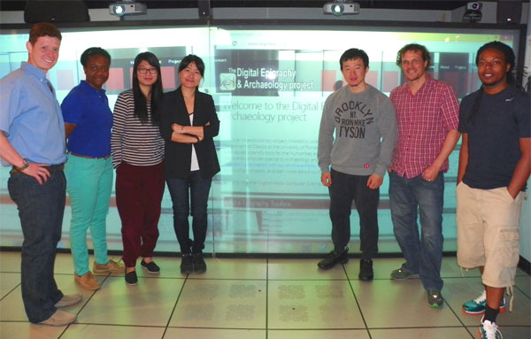

People - Members & Collaborators
DEA is the result of inter-disciplinary collaborations between scholars and scientists from several major universities and institutes around the world who actively participate and contribute in our projects.

Student contributors of DEA - Interdisciplinary Research Seminar 2014
Directory in alphabetical order:
Angelos Barmpoutis, Ph.D.
Director of the Digital Epigraphy and Archaeology project
Digital Worlds Institute, University of Florida
Eleni Bozia, Ph.D.
Associate Director of the Digital Epigraphy and Archaeology project
Department of Classics, University of Florida
Michèle Brunet, Ph.D.
Member of the DEA advisory board
Institut Universitaire de France, Université Lumière Lyon 2
Dinah Eastop, Ph.D.
Member of the DEA advisory board
The National Archives, United Kingdom
Rachel Farmer, Ph.D.
United Kingdom National Archives
Rhea Garen
Institute for Digital Collections, Cornell University
Adeline Levivier
Institut Universitaire de France, Université Lumière Lyon 2
Stephen G. Miller, Ph.D.
University of California Berkeley, USA
Seth Pevnick, Ph.D.
Tampa Museum of Art
Eric Rebillard, Ph.D.
Member of the DEA advisory board
Department of Classics and History, Cornell University
Giovanna Rocca, Ph.D.
Member of the DEA advisory board
IULM University of Languages and Communication in Milan, Italy
Giulia Sarullo, Ph.D.
Cultore della Materia at Universita Cattolica del Sacro Cuore
Robert S. Wagman, Ph.D.
Department of Classics, University of Florida
This project would not be possible without the significant contribution of several students who are acknowledged below in alphabetical order:
Michael Baksh
MA in Digital Arts and Sciences, Digital Worlds Institute, University of Florida
Darius Brown
MA in Digital Arts and Sciences, Digital Worlds Institute, University of Florida
Matthew Carroll
MA in Digital Arts and Sciences, Digital Worlds Institute, University of Florida
Justin C. Houseman
MA in Classical Studies, Department of Classics, University of Florida
Kenya Smith
MA in Digital Arts and Sciences, Digital Worlds Institute, University of Florida
Public Presentations